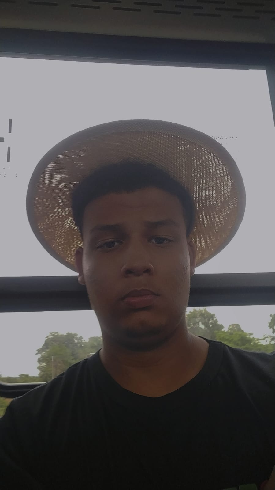

Amarílis Gonçalves Carvalho
Sou a Mel! Amante do cinema nacional, esportes e teatro.
3° Informática, vocês sempre fazem meus dias mais felizes (ou não)!
@amarilissgc °❀⋆.ೃ࿔*:･

Natália Lambert Nivaldo
Aqui é a Natália Lambert!
Sou de 2008, de touro e uma amante obras de terror.
Me siga no @lambertnati no instagram.
Gabriela Sales Marinho
Meu nome é Gabriela e vou levar essa turma para meu coração.
Me segue no insta @bagii_kk üòú

Isadora Jardim Azevedo
Eu sou a Isadora Jardim!
Encontrei essa turma na metade de 2024 pra alegrar (ou não) a vida desse povo
@_isadorajardim.

Dego da Silva Borges
Dego da Silva, atleta de vôlei e flamenguista de carteira.
Segue no insta para me conhecer melhor @dego_borges.

Dionathan da Silva Martins
Olá, me chamo Dionathan e vou guardar boas lembranças dessa turma.
Vou sentir saudades! Segue no Instagram aí @mordick_777.
Nadielly da Silva Cruz
Oii, meu nome é Nadielly, sou de fevereiro de 2007 e sou uma das mais velhas da sala.
Minha cor favorita é roxo e minha banda favorita é The Neighbourhood.
Bianca Vitória Pinho Doerner
⭐ 26/10/2007 escorpião, intp
"sou feita de chocomenta, anime shounen/seinen e roupas pretas"
@bianqaw.
Rafael Rodrigues Gonçalves
⭐ 26/10/2007 escorpião, intp "sou feita de chocomenta, anime shounen/seinen e roupas pretas" @bianqaw.
© 2025 - Blog da Turma 3¬∫ Info üíª | Feito com carinho